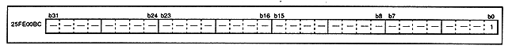

Figure 3.23 A-Bus interrupt acknowledge register (register: AIAK) initial value 00000000H

Table 3.9 A-Bus interrupt acknowledge contents
Access | Status | contents |
Read | 0 | A-Bus interrupt Invalid |
1 | A-Bus interrupt enabled | |
Export | 0 | A-Bus interrupt Invalid |
1 | A-Bus interrupt enabled |